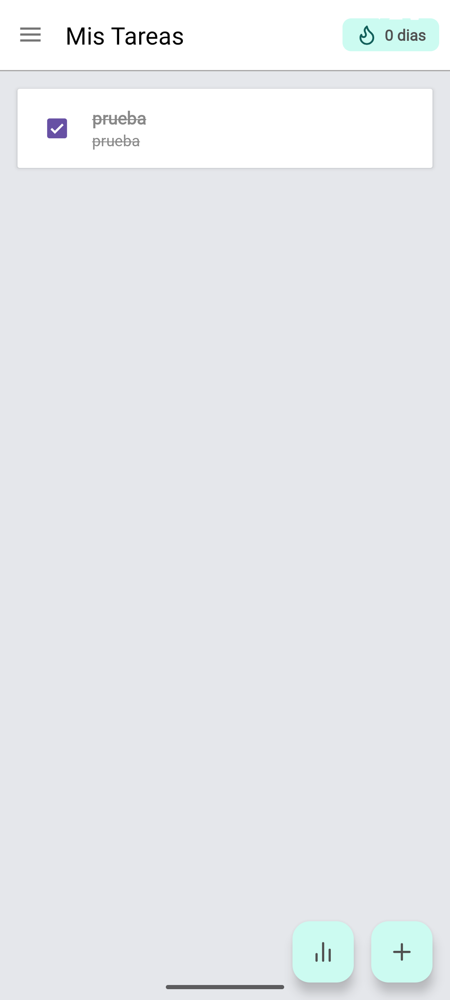
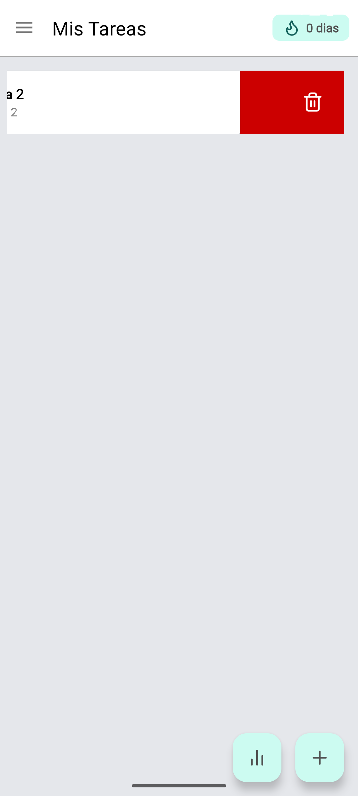
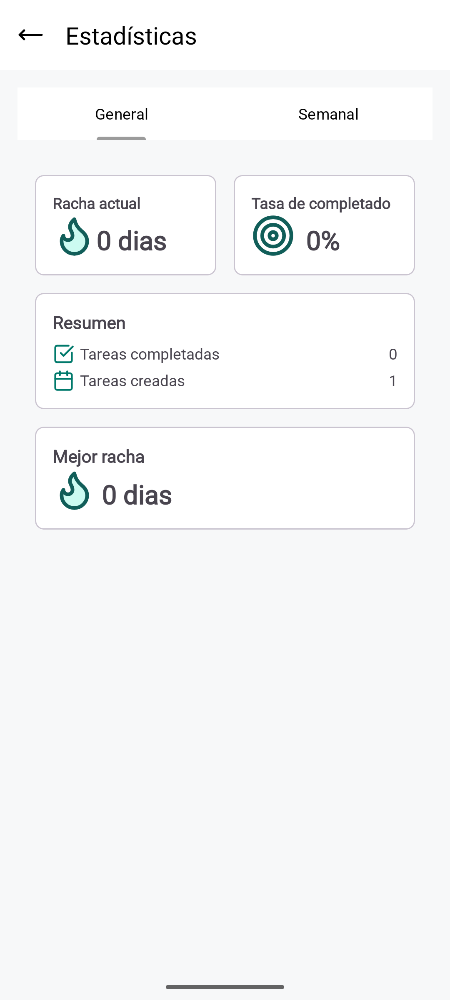

Introducción
habitsTracker es una aplicación diseñada para ayudarte a formar y mantener hábitos. Con una interfaz intuitiva, podrás registrar tus hábitos diarios y visualizar tu progreso a través de gráficos claros además de tener un sistema de rachas para mantener la iniciativa.
Instalación
- Descarga la app desde el repositorio de Github.
- Instala Android Studio (recomendado: Android Studio Meerkat Feature Drop | 2024.3.2 Patch 1).
- Instala MySQL localmente o usa Docker.
- Ejecuta el script inicial de la base de datos.
- Abre el proyecto en Android Studio y ejecuta el emulador.
Uso
Registra una nueva cuenta
- Al abrir la app sin sesión, pulsa en "¿No tienes cuenta? Regístrate".
- Introduce nombre, correo y contraseña.
- Opcional: sube una imagen de perfil o usa la generada automáticamente.
Crear un nuevo hábito
- Pulsa el botón "+" en la pantalla principal.
- Introduce nombre y descripción del hábito.
- Guarda para comenzar a registrar.

Completa un hábito
Haz clic en la checkbox para marcar el hábito como completado.
Edita un hábito
- Arrastra el hábito hacia la derecha.
- Modifica los campos en la pantalla de edición.
- Guarda para aplicar cambios.
Elimina un hábito
Arrastra el hábito hacia la izquierda para eliminarlo.
Comprueba tus estadísticas
Pulsa el icono de estadísticas en el menú lateral o junto al botón "+".
Funcionalidades
- Registro diario de hábitos.
- Edición de hábitos.
- Gráficos semanales.
- Sistema de rachas.
- Borrado de hábitos.
- Creación de cuenta.
- Imagen de perfil.
- Imagen de perfil generada automáticamente.